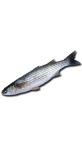
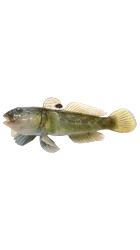

Рыбы на каспийском море
-
Сингиль
Максимальная длина тела 59 см, обычно 20—35 см[5]. Масса до 1 кг, обычно 50—450 г. Продолжительность жизни до 12 лет. Тело удлиненное, невысокое, едва сжатое с боков, покрыто крупной чешуей. Голова короткая, уплощенная. Жировые веки развиты слабо и заметны только по бокам глаз. Боковая линия отсутствует, но в чешуе спины и верхней части головы является одинарные бороздки системы боковой линии. Спина и верхняя половина головы темно-серые, пепельные или буровато-черные с зеленовато-синим оттенком.
- 
-
Полосатый лаврак
Полосатый лавра́к, или полосатый окунь (лат. Morone saxatilis) — вид лучепёрых рыб из семейства мороновых. Распространён в Атлантическом океане у побережья Северной Америки от устья реки Святого Лаврентия до Луизианы. Фигурирует в Списке рыб Каспийского моря.Полосатый лаврак имеет удлинённое тело серебристого цвета с характерными тёмными продольными полосами от задней части жабр до основания хвоста. Максимальная длина составляет 200 см, самый крупный зарегистрированный экземпляр весил 57 кг. Большинство взрослых рыб достигают около 120 см в длину. Предполагается, что рыбы живут около 30 лет. Анадромы, нерестятся в пресной воде

-
Бычок-кругляк
Бычо́к-кругля́к, или черноротый бычок, или каспи́йский бычо́к-кругля́к (Neogobius melanostomus) мелкая рыба семейства бычковые.Длина тела составляет от 15 до 25 см, вес до 250 граммов. Тело коренастое, полностью покрытое чешуей, которая заходит также на затылок. Хвост к концу уплощён. Хорошо развита система каналов и пор боковой линии, особенно на голове. Рот умеренной длины, его углы не заходят за глаза
- 
-
Речной окунь
Речно́й о́кунь, или обыкнове́нный окунь (лат. Perca fluviatilis), — вид лучепёрых рыб рода пресноводных окуней семейства окунёвых (Percidae). Речной окунь широко распространён в пресных водоёмах Европы и Северной Азии (до бассейна Колымы на востоке и водоёмов северных районов Ирана и Афганистана на юге), завезён в Африку, Австралию и Новую Зеландию. Ранее считалось, что ареал речного окуня включает и водоёмы Северной Америки, которые по современным представлениям населяет самостоятельный вид жёлтый окунь (Perca flavescens).Речной окунь относится к хищным рыбам: в рационе взрослого окуня значительную долю занимают другие пресноводные рыбы. Речной окунь предпочитает придерживаться равнинных водоёмов, его можно встретить в реках, озёрах, прудах, водохранилищах и даже в солоноватых участках морей. Нерест у речного окуня происходит ранней весной, самка окуня откладывает икринки в форме длинной (до 1 м) студенистой ленты. Окунь — популярный объект любительского рыболовства, в отдельных водоёмах имеет важное промысловое значение.